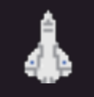

Hello! So my question is quite simple to ask (perhaps more difficult to answer); is it possible to select the type of filtering that applies to my StaticSprite2D objects?
For example, this is what I’ve been working on:
The ship looks great. What I want is a 23 pixel high image that I can scale up by 4 in the code to achieve a 92 pixel high result on the screen. When I do that, this is the result that I get:

Pretty gross, right? It appears to be using a Linear or Cubic scaling algorithm, which is not what I want. I would like to tell it to use a Nearest Neighbour scaling algorithm so that I can get those crisp pixels that will compliment the art. After about a week of searching, the documentation left me struck with no leads.
My current workaround is to scale the image before-hand and load up a much larger image to be rendered. It’s quite extraneous and not particularly fun or optimised for loading.
Is there any proper or better solution that I’m missing?
Thanks!